Basic Source Control
Why Version Control System ?
Collaboration Issue !!
http://carriebjackson.files.wordpress.com/2012/09/collaboration1.jpg
Version Control System
- Local
- Centralize
- Distributed
Local
Copy file and folder

http://git-scm.com/figures/18333fig0101-tn.png
Centralize
CVS, SVN

http://git-scm.com/figures/18333fig0102-tn.png
Distributed
Git, Mercurial HG, Bazaar

http://git-scm.com/figures/18333fig0103-tn.png
Why SVN ?
- Powerful with command line interface
- Free / Open source
- Faster
- DB based not file based
- Customized attributes to be attached to files
- Automatically handles all file types without instructions
- Support Folder / File rename & copies maintaining the history
SVN Dataflow
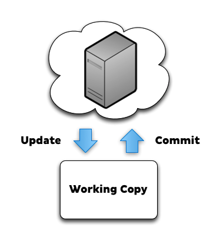
http://chadthompson.me/wp-content/uploads/2012/12/svn-workflow.png
SVN Repository
- branches - Experimental
- tags - Specific version
- trunk - Main copy
SVN in Action
- svn checkout [repo_url]
- svn add [a file/directory]
- svn delete
- svn commit
- svn update
- svn mv(move)
- svn help
- svn diff
- svn revert
- svn list
Why GIT ?
- Distributed - no single of failure
- Speed - work on local
- Simple - less config
- Non-linear development
- Easy Merging
- No file locks
Git Dataflow
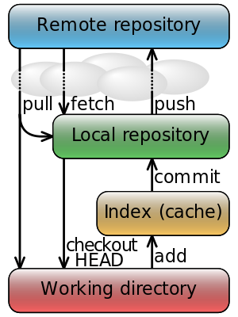
http://upload.wikimedia.org/wikipedia/commons/thumb/4/44/Git_data_flow_simplified.svg/300px-Git_data_flow_simplified.svg.png
arm$ git init
Initialized empty Git repository in /workspace/git101/.git/
arm$ git clone https://github.com/armeo/git101.git <location>
arm$ git help
arm$ git config --global user.name "Arm"
arm$ git config --global user.email "armchockaumnuai@gmail.com"
arm$ git config --global color.ui auto
arm$ git config --global alias.st status
arm$ echo "Initial README" > README.md
arm$ git add README.md
arm$ git commit -m "Add README"
[master (root-commit) d369bc8] Add README
1 file changed, 1 insertion(+)
create mode 100644 README.md
arm$ git log
commit d369bc8ccc7e86de1e8c99df8c142674380dcdcd
Author: Arm <armchockaumnuai@gmail.com>
Date: Thu Mar 21 22:19:37 2013 +0700
Add README
The Staging area
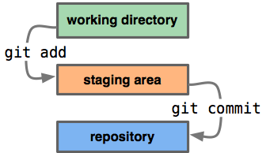
http://codingdomain.com/git/partial-commits/git-staging-area.png
Workflow
- Code
- Stage your changes (git add)
- Review your work (git status, git diff)
- Commit (locally) (git commit)
- Repeat
arm$ echo "I'm updateing README" > README.md
arm$ git status
# On branch master
# Changes not staged for commit:
# (use "git add ..." to update what will be committed)
# (use "git checkout -- ..." to discard changes in working directory)
#
# modified: README.md
#
no changes added to commit (use "git add" and/or "git commit -a")
arm$ git add .
arm$ git status
# On branch master
# Changes to be committed:
# (use "git reset HEAD ..." to unstage)
#
# modified: README.md
#
arm$ git reset
Unstaged changes after reset:
M README.md
arm$ git status
# On branch master
# Changes not staged for commit:
# (use "git add ..." to update what will be committed)
# (use "git checkout -- ..." to discard changes in working directory)
#
# modified: README.md
#
no changes added to commit (use "git add" and/or "git commit -a")
arm$ git reset --hard HEAD
HEAD is now at d369bc8 Add README
Why Branch ?
- Safely experiment with new ideas
- Agility
- Git makes branching easy
- Git makes mergeing (usually...) very easy
Branch and Merge

http://git-scm.com/figures/18333fig0317-tn.png
arm$ git checkout -b new_feature
Switched to a new branch 'new_feature'
arm$ git branch
master
* new_feature
arm$ git checkout master
Switched to branch 'master'
arm$ git branch
* master
new_feature
arm$ git branch -d new_feature
Deleted branch new_feature (was d369bc8).
arm$ git branch
* master
arm$ git checkout -b update_readme
arm$ git branch
master
* update_readme
arm$ vi README.md
arm$ git add .
arm$ git commit -m "update README"
[update_readme 78fb5b8] update README
1 file changed, 2 insertions(+)
arm$ git status
# On branch update_readme
nothing to commit (working directory clean)
arm$ git checkout master
Switched to branch 'master'
arm$ git merge update_readme
Updating d369bc8..78fb5b8
Fast-forward
README.md | 2 ++
1 file changed, 2 insertions(+)
arm$ git status
# On branch master
nothing to commit (working directory clean)
Try ...
git remote add <remote_name> <remote_url>
git push <remote_name> <branch_name>
git pull <remote_name> <branch_name>
git fetch <remote_name> <branch_name>
git log # show a log of changes
git status # see which file you changed
git diff # view uncommitted changes in the working copy
git show <commitid> # show one commit
git checkout <filename> #restore original, throw local changes away
git checkout -f # throw all local changes away
git reset --hard # the same
git rm <filename> # remove file
Scenario based: Problem & Solutions
1. How to create a local repo ?
git init2. How to clone a remote repo ?
git clone [repo_url]3. How to see history ?
git log --oneline --graph4. How to used alias ?
git config --global alias.lg "log --graph --decorate --oneline --abbrev-commit"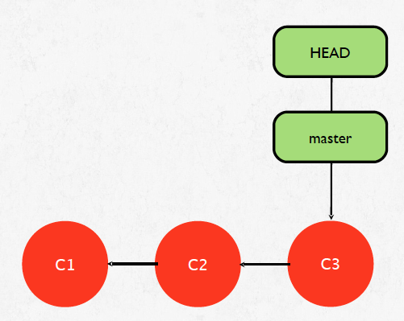
5. How to make a commit ?
git status
echo 'hello world' >> file1.txt
git status
git add file1.txt
git status
git commit -m "my first commit"
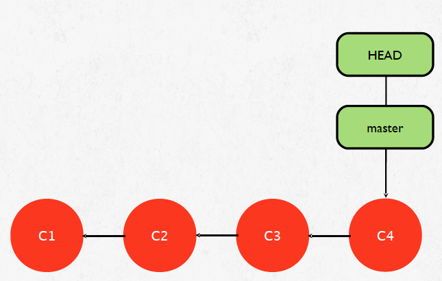
svn add != git add
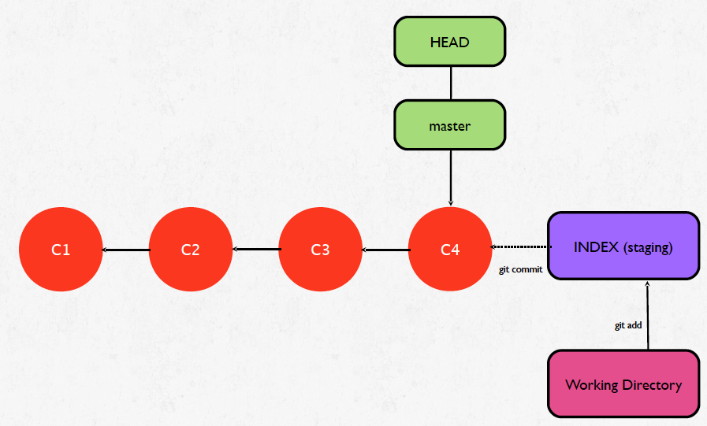
6. Git Diff
echo 'test git diff' >> file1.txt
git status
git diff
git add file1.txt
git status
# change to be committed # (use "git rm --cached [file]" to unstage)
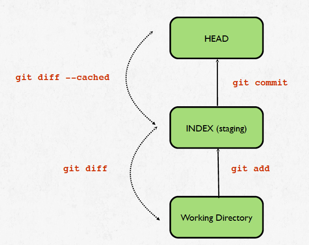
7. Index is a SNAPSHOT !!
echo 'forgot something' >> file1.txt
git status
git diff
git commit -am "add something"
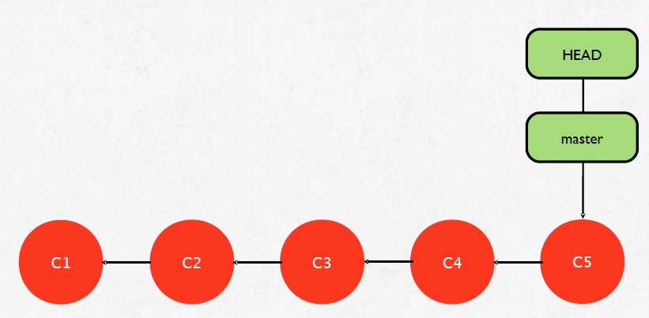
8. How to create a new branch ?
git branch feature1
git branch
git checkout feature1
git branch
git lg
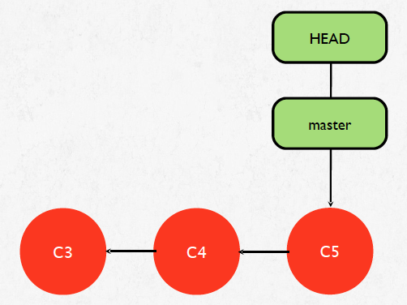
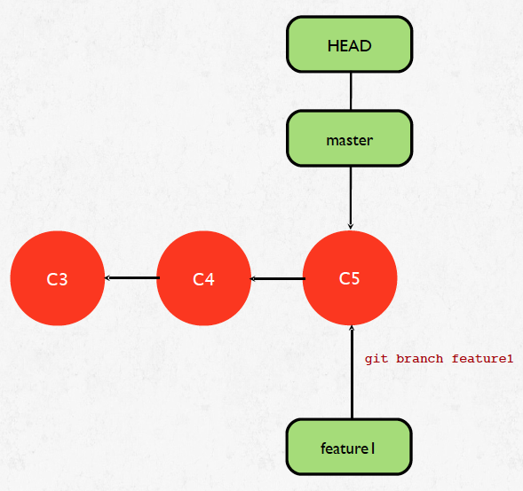
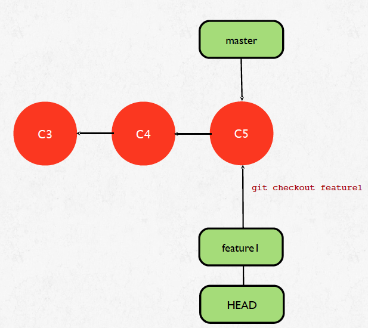
9. How to create a new branch and switch to it ?
git checkout -b feature2
git branch
10. How to create a new branch from a commit point ?
git checkout -b feature3 HEAD~1
git branch
git lg --all
11. Makes 2 commit to feature2 branch
git checkout feature2
echo 'feature 2.1' >> feature2.txt
git add feature2.txt
git commit -m "completed task 2.1"
echo 'feature 2.2' >> feature2.txt
git commit -am "complete task 2.2"
git lg
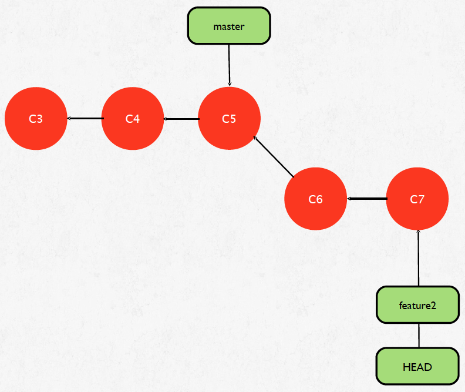
12. How to merge a branch ?
git checkout master
git merge feature2
git lg
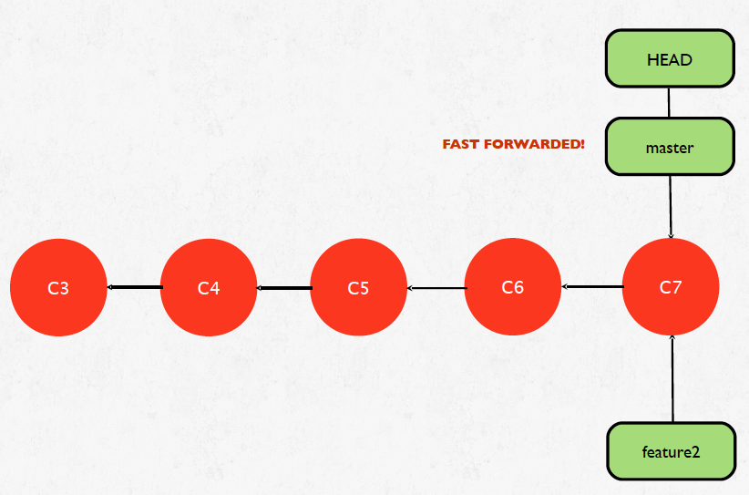
13. Switch back to feature3 branch and create 1 new commit !!
git checkout feature3
echo 'feature3' >> feature3.txt
git add feature3.txt
git commit -m "complete feature3"
git lg
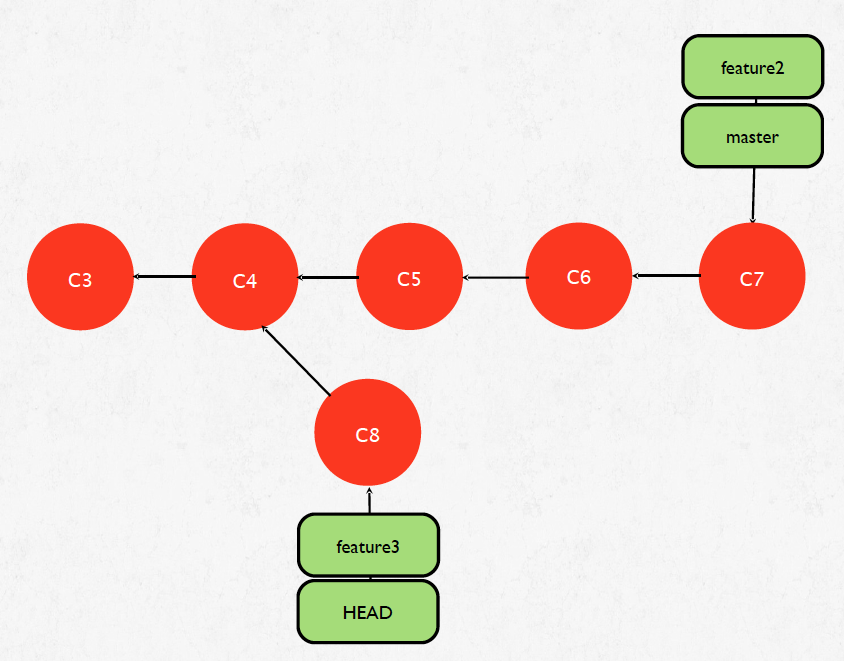
14. Switch back to master branch and merge feature3 branch !!
git checkout master
git merge feature3
git lg
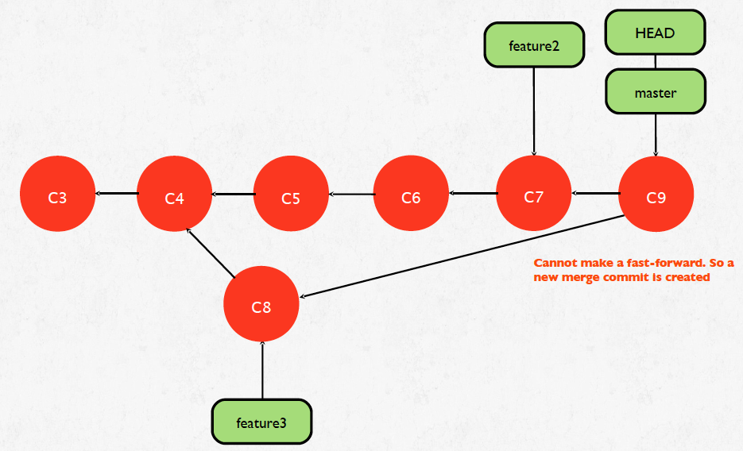
15. How to reset a branch ?
git checkout master
git reset --hard feature2
git lg
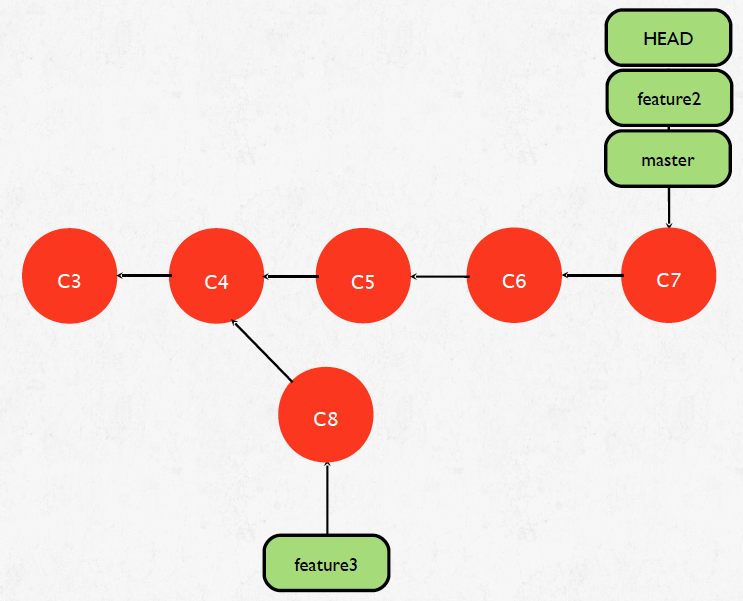
16. How to delete a branch ?
git checkout master
git branch -D feature2
git branch
git lg
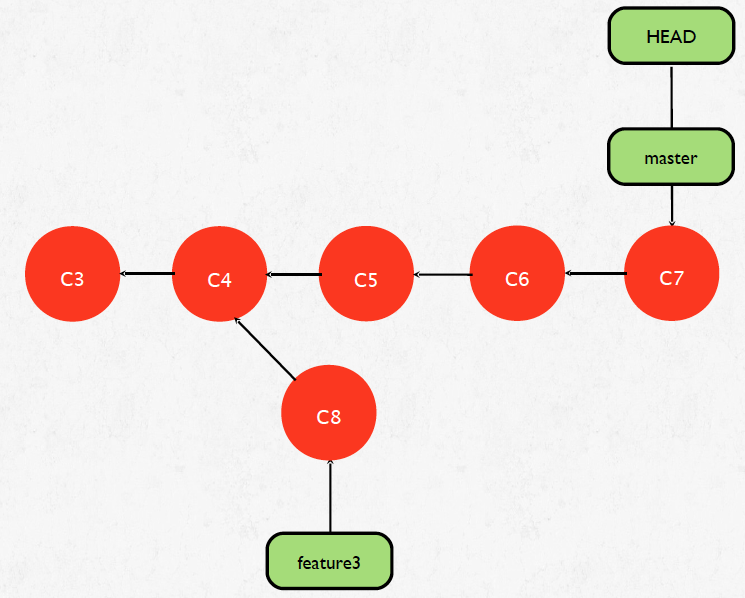
17. How to rebase a branch ?
git checkout feature3
git rebase master
git branch
git lg
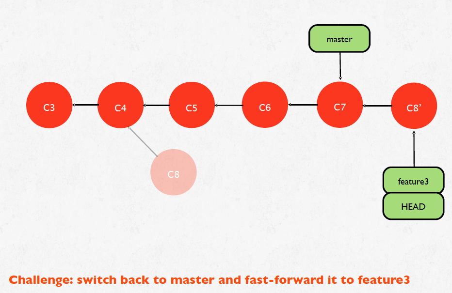
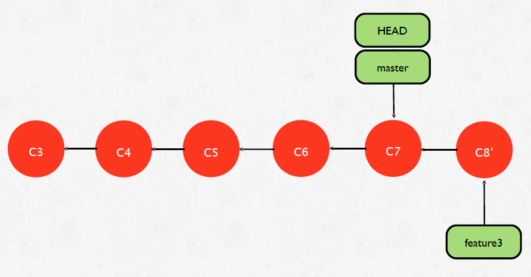
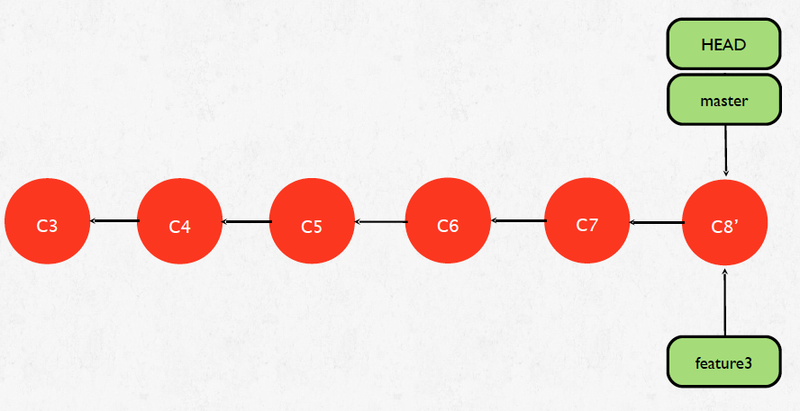
18. How to see remote details ?
git remote -v
git remote show origin
19. How to see tracking remote branches ?
git branch -r
git branch -a
20. How to push changes to a branch ?
git push origin master21. How to pull from remote ?
git pull origin master
# git pull == git fetch; git merge origin/master #
# git pull --rebase == git fetch; git rebase origin/master #
22. How to stash changes ?
git reset --hard HEAD~1
echo 'test stash' >> feature2.txt
git status
git pull origin master
git stash
git status
git pull origin master
git stash pop
23. How to create a tag ?
git tag v1.0
git tag v1.1 [commit]
git push origin v1.0
24. How to delete a local branch ?
git branch -D feature225. How to delete a remote branch ?
git push origin :feature226. How to remove deleted tracking branch ?
git branch -a
git fetch
git prune
git fetch -p
27. How to revert a public commit ?
git revert #commit